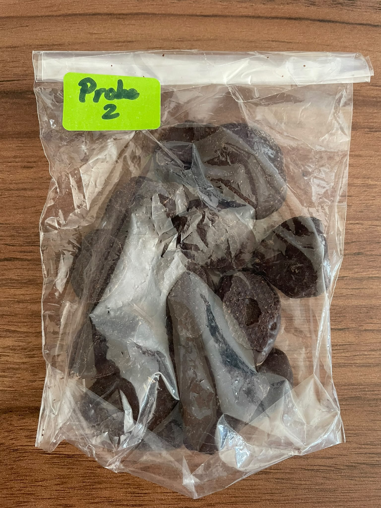
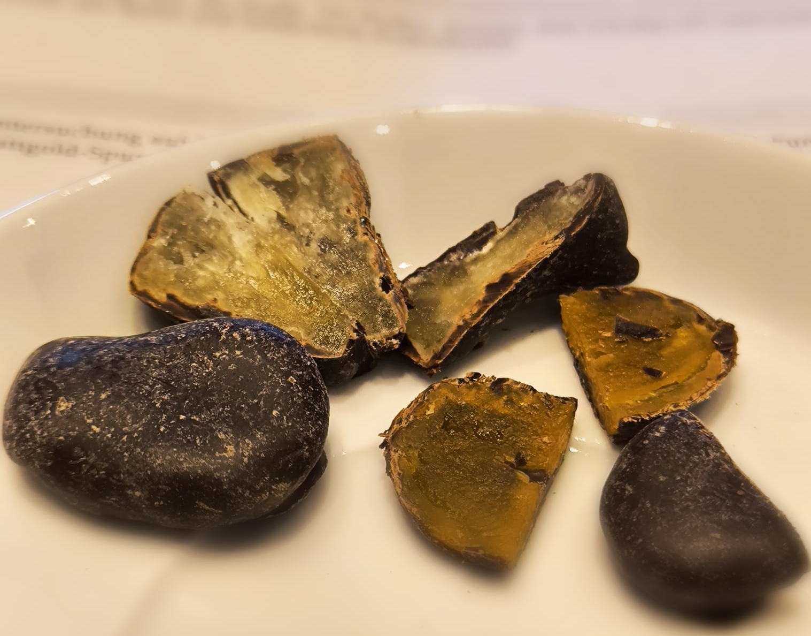
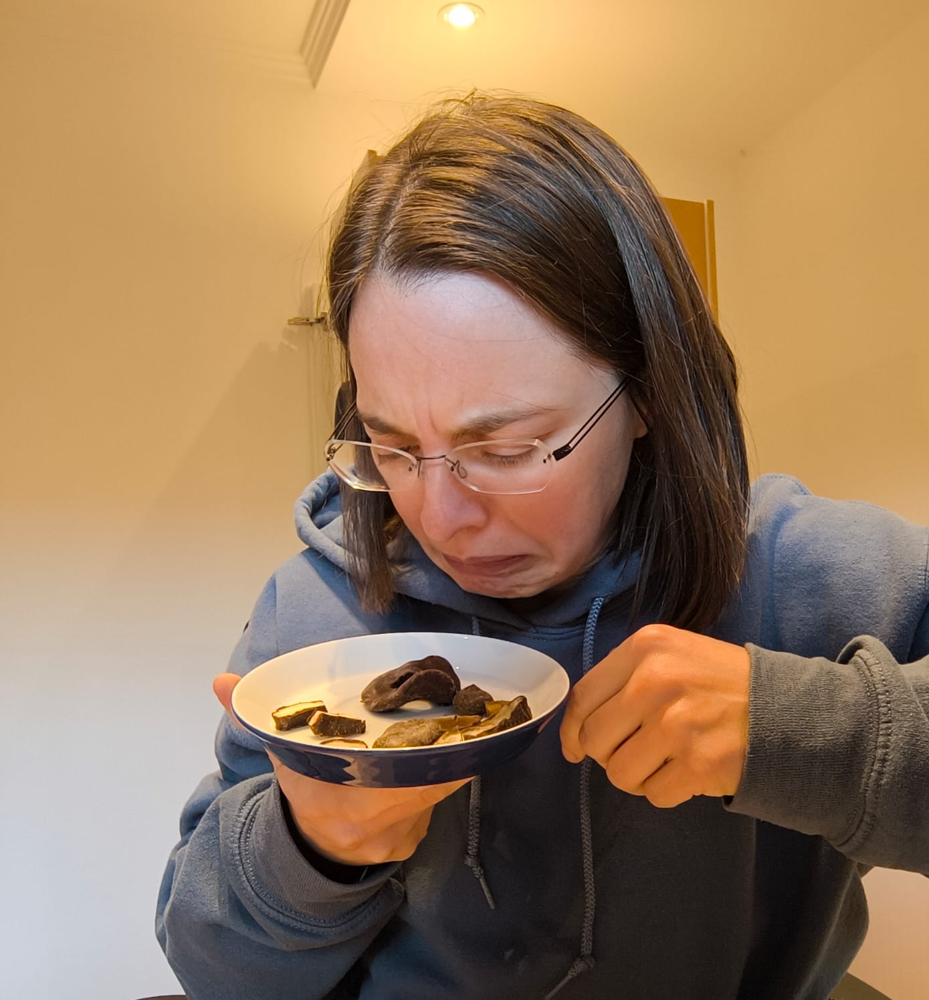

Laborbericht Nr. 05 „Goldrausch im Schuhprofil“
Stammdaten
Untersuchungsauftrag
Röntgendiffraktometrische Untersuchung auf Edelmetallbestandteile. Bei positivem Befund: Herkunftsangabe der Ursprungsmaterialien, insbesondere Prüfung möglicher Blattgoldspuren im Zusammenhang mit der kunstsachverständigen Tätigkeit des Vermissten.
Probenbeschreibung und Eingangsbefund
Die eingesandte Probe wurde laut Außendienstbericht beim Gang über die Straße entdeckt und anschließend dem Schuhprofil entnommen. Das Material präsentiert sich als dunkelbraunes, unregelmäßig geformtes Konglomerat mit glänzenden Oberflächenbereichen und auffälligen orangefarbenen sowie gelblichen Einschlüssen mit einer ausgeprägte Heterogenität. Die Laborleitung hat die Probe aufgrund der beschriebenen Fundumstände zunächst unter besonderer Vorsicht behandeln lassen. Ein Mitarbeiter äußerte bereits bei der ersten Sichtung den Verdacht, dass es sich um ein Beweismittel handeln könnte, das besser nicht auf dem Labortisch liegen sollte.



Methodik
- Röntgendiffraktometrische Untersuchung auf kristalline Bestandteile.
- Ergänzende Materialanalyse auf Edelmetallspuren.
- Mechanische Trennung der unterschiedlichen Probenbestandteile.
- Sensorische Prüfung einer sauberen Vergleichsprobe.
Die sensorische Untersuchung wurde zunächst von zwei Mitarbeiter*innen unabhängig voneinander durchgeführt. Nach übereinstimmender Bewertung wurde beschlossen, die Anzahl der weiteren Testpersonen auf das unbedingt erforderliche Maß zu reduzieren. Die Laborleitung dankt insbesondere der freiwilligen Mitarbeiterin für ihren persönlichen Einsatz und ihre bemerkenswerte Bereitschaft, auch unter schwierigen Bedingungen zur Aufklärung beizutragen.
Messergebnisse
1. Materialanalyse
| Untersuchungsparameter | Ergebnis |
|---|---|
| Gold (Au) | Nicht nachweisbar |
| Sonstige Edelmetalle | Keine relevanten Befunde |
| Gemessene Härte | tbd |
2. Olfaktorische Untersuchung
| Prüfmerkmal | Bewertung |
|---|---|
| Intensität im Anlieferungszustand | 9/10 |
| Erdige Begleitnoten | stark ausgeprägt |
| Gesamteindruck | dringend erklärungsbedürftig |
Auswertung und Interpretation
Die Untersuchung auf Edelmetalle verlief negativ. Insbesondere konnten keine relevanten Blattgoldspuren nachgewiesen werden. Die ursprüngliche Vermutung einer kunsthistorisch bedeutsamen Spur muss daher vorläufig verworfen werden. Stattdessen ist festzustellen, dass der CI-D. wohl durch die gelblichen Farbe im Inneren der Probe von Unbekannten auf eine falsche Fährte gelockt wurde. Nicht alles was gelb ist, ist Gold; auch wenn das Zuspielen von Edelmetallproben durchaus der Kaffeekasse dienen würde. Die Laborleitung zeigt sich über diesen Befund bedingt enttäuscht, lieferte so auch die letzte eingesanfte Probe keine Hinweise auf den Fall Nielsen. Die olfaktorische Untersuchung ergab eine erhebliche Abweichung zwischen dem ursprünglichen Fundmaterial und der sauberen Vergleichsprobe. Die Laborleitung geht davon aus, dass die ungewöhnliche Geruchsentwicklung ist mit den Fundumständen und einer möglichen Kontamination durch das Schuhprofil vereinbar ist.
Kriminalistischer Abgleich
Fall Nielsen:
Ein Zusammenhang mit der kunstsachverständigen Tätigkeit des Vermissten konnte nicht festgestellt werden. Insbesondere gibt es keine Hinweise auf Blattgold oder andere Edelmetallspuren. Die Zentrale fragt sich, ob die Suche nach Gold möglicherweise etwas zu ambitioniert war. Ein einfacher olefaktorischer Test am Fundort hätte für die Aufklärung der Spur vermutlich ausgereicht.
Personalakte CI-D:
Die Bereitschaft des Ermittlers, auch ungewöhnliche Fundstücke zu sichern und dem Zentrallabor zur Verfügung zu stellen, wird ausdrücklich gewürdigt. Die Zentrale empfiehlt, künftig vor der Entnahme aus dem Schuhprofil eine kurze Sichtprüfung vorzunehmen. Nicht jedes Material, das auf der Straße liegt, muss zwangsläufig einen kriminalistischen Hintergrund haben.
Deputy D.:
Die Zentrale stellt fest, dass Deputy D. erneut im Zusammenhang mit einer ungewöhnlichen Außendienstaktion auftaucht. Es wird daher um Klärung gebeten, ob Deputy D. an der Auswahl, Beschaffung oder möglichen Verkostung des ursprünglichen Materials beteiligt war. Eine Aussage wie „Das war nur zur Tarnung“ wird als Erklärung nicht akzeptiert.
Gesamtbewertung
- Edelmetallnachweis: Negativ
- Blattgold: Nicht nachweisbar
- Bezug zum Fall Nielsen: Nicht belegt
- Kriminalistische Relevanz: Gering
- Belastung des Zentrallabors: Hoch
Aktenvermerk des Zentrallabors
Die Zentrale würdigt den Einsatz des CI-D und die sorgfältige Sicherung der Probe. Allerdings hat die aktuelle Probenserie zu einer erheblichen Mehrbelastung des Zentrallabors geführt. Nach Untersuchung von fünf Proben, mehreren Sonderaufträgen und einer nicht unerheblichen Anzahl sensorischer Prüfungen sieht sich die Laborleitung veranlasst, eine vorübergehende Einschränkung der Probenannahme zu beantragen. Die Laborleitung bittet darum, künftig nur noch Proben mit erkennbarem kriminalistischem Mehrwert einzusenden.
Abschließende Bemerkung:
Die Zentrale hofft, dass die nächsten Außendienstberichte wieder einen stärkeren Bezug zum Fall Nielsen aufweisen. Das Zentrallabor ist ein kriminaltechnischer Dienstleister und keine Außenstelle der Lebensmittelkontrolle.